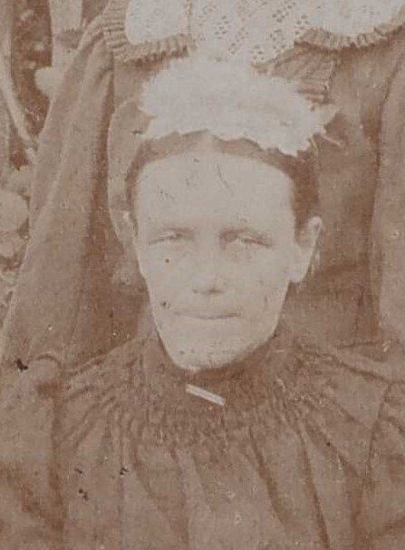

Dārta Āboltiņa b. 1855
Mother of Alma Leontīne Āboltiņa, wife of Peter's great-great-uncle Dāvis Sirlaks.
Also recorded as Dārta Āboliņa; Dārta Zariņš (married name Āboltiņš).
Dārta Āboltiņa was born on 23 Oct 1855 in Vecsalaca, Vidzeme, Latvia (according to an online family tree)2. She married Ancis Āboltiņš on 25 Oct 1874 in Salaca parish, Vidzeme, Latvia (according to an online family tree)6. She has died (according to an online family tree)4, but the date of death is not yet documented.
Family
- Husband
- Ancis Āboltiņš b. 1839 · married on 25 Oct 1874 in Salaca parish, Vidzeme, Latvia6
- Children
- Alma Leontīne Āboltiņa 1887–1959 documented
- Zelma Āboltiņa 1883–1960 documented
- Voldemārs Āboltiņš b. 1875 documented
- Alīda Āboltiņa b. 1878 documented
- Alfrēds Āboltiņš b. 1887 documented
Life events
| Event | Date | Place and details |
|---|---|---|
| Born | 23 Oct 1855 | Vecsalaca, Vidzeme, Latvia Old Style (Julian) date: 11 Oct 1855 According to an online family tree2 |
| Lived | 1858 | Vecsalaca, Vidzeme, Latvia According to an online family tree3 |
| Married | 25 Oct 1874 | with Ancis Āboltiņš Salaca parish, Vidzeme, Latvia Old Style (Julian) date: 13 Oct 1874 According to an online family tree6 |
| Note | abt 1921 | Aina's maternal grandmother and registered godmother (so she should appear in Aina's Dec 1920/1921 baptism entry). Alive c. 1921–22 when she visited Vīstuči. Surname printed "Āboliņa" here vs "Āboltiņi" on p. 23.5 |
| Died | not yet documented | According to an online family tree4 |
Photographs

Sources
- MyHeritage family tree 'Dzimta' of Peter's third cousin (his family site), member GEDCOM export of 26 Oct 2026, I23 (person-6000023), GEDCOM lines 969–1008.
NAME Dārta /Zariņš/ · _MARNM Āboltiņš
- MyHeritage family tree 'Dzimta' of Peter's third cousin (his family site), member GEDCOM export of 26 Oct 2026, I23 (person-6000023), GEDCOM lines 969–1008.
BIRT · 11 OCT 1855 · Vecsalaca
Date: read as Julian (Old Style), like his other church-book dates before 1918: = 23 Oct 1855 (Gregorian); he does not say which calendar. His note: aged 2 in the 1858 revision (b. c. 1856); the FamilySearch tree he matched gives 1856. His record match: FamilySearch Family Tree, https://www.myheritage.lv/research/collection-40001/familysearch-family-tree?itemId=972047567&action=showRecord: 'Darta Zarins | Dzimums: Sieviete | Dzimšana: 1856 - vecsalacas muiza Krievijas Imperija | Miršana: 1910 - vecsalacas muiza Krievijas Imperija<br&a | mp;gt;Vecāki: Mikelis Zarins, Anna Zarins | Brāļi vai māsas: Lize Zarins, Justs Zarins, Matiss Zarins, Marija Zarins, Marina Zarins, Fricis Zarins'.
- MyHeritage family tree 'Dzimta' of Peter's third cousin (his family site), member GEDCOM export of 26 Oct 2026, I23 (person-6000023), GEDCOM lines 969–1008.
Dvēseļu revīzija 1858. gadā Dārtai 2 gadi
His note on the 1858 soul revision, https://www.raduraksti.arhivi.lv/objects/1:5:23:1685:6129#&gid=1&pid=466: Dārta aged 2 (so b. c. 1856).
- MyHeritage family tree 'Dzimta' of Peter's third cousin (his family site), member GEDCOM export of 26 Oct 2026, I23 (person-6000023), GEDCOM lines 969–1008.
DEAT · Y (marked deceased; no date or place)
His record match: FamilySearch Family Tree, https://www.myheritage.lv/research/collection-40001/familysearch-family-tree?itemId=972047567&action=showRecord: 'Darta Zarins | Dzimums: Sieviete | Dzimšana: 1856 - vecsalacas muiza Krievijas Imperija | Miršana: 1910 - vecsalacas muiza Krievijas Imperija<br&a | mp;gt;Vecāki: Mikelis Zarins, Anna Zarins | Brāļi vai māsas: Lize Zarins, Justs Zarins, Matiss Zarins, Marija Zarins, Marina Zarins, Fricis Zarins'.
- Ainas Sirlakas atmiņas ("Vīstuči"), Aina Jurciņa née Sirlaka, Priekuļi, 1998, p. 26, section "UN TAD MĒS BIJĀM PIEDZIMUŠI".
Tā esot mūsu mammas mamma bijusi. … Mammas mamma gribējusi Veltu. Tad mamma nedevusi. … Šī vecāmamma Dārta Āboliņa esot man arī par krustmāti pierakstīta.
Translation: That is said to have been our mamma's mamma. … Mamma's mamma wanted Velta. Then mamma would not give her. … This grandmother, Dārta Āboliņa, is said to have been registered as my godmother, too.
Aina's maternal grandmother and registered godmother (so she should appear in Aina's Dec 1920/1921 baptism entry). Alive c. 1921–22 when she visited Vīstuči. Surname printed "Āboliņa" here vs "Āboltiņi" on p. 23.
- MyHeritage family tree 'Dzimta' of Peter's third cousin (his family site), member GEDCOM export of 26 Oct 2026, family F10 (I22 Ancis Āboltiņš × I23 Dārta Āboltiņa).
MARR 1874.gada 13. Okt Salacas pagasts
read as Julian (Old Style), like his other church-book dates before 1918: = 25 Oct 1874 (Gregorian); he does not say which calendar